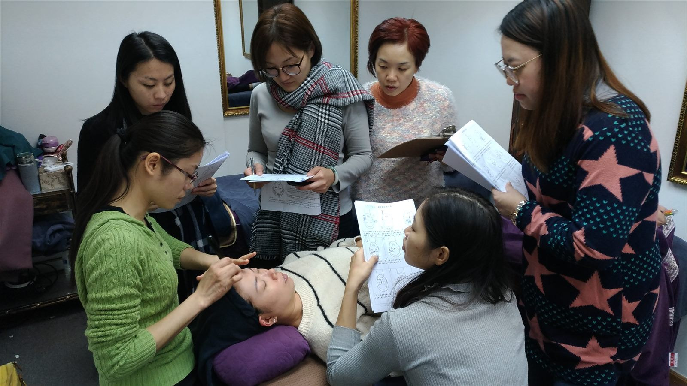

The Bojin Journal · Myths & real talk
Gua sha not giving you the results you hoped? Here's the simple fix

If your gua sha hasn't given you the glow you hoped for, here's the honest answer: it's usually not that gua sha "doesn't work," and it's almost never that you're doing it wrong. What tends to be missing is the technique behind the tool — the method that no one ever really taught you. The good news is you don't need to throw anything away. You already own the stone. You just need to add the method.
So many women I meet have a beautiful jade or rose quartz board sitting in a bathroom drawer. You bought it with real hope. You watched a few videos, ran it along your cheeks a couple of times, and then... life happened, and the results never quite showed up. If that's you, please know you're in very good company — and none of it is a personal failure.
Why doesn't my gua sha look like it does online?
Most gua sha videos show you where to glide the stone, but not how — the pressure, the angle, the direction, the rhythm, and how to actually read your own face before you start. Without that, you're holding a wonderful tool with only half the instructions. It's a bit like being handed a lovely set of paintbrushes with no lesson on brushstrokes. The brushes are fine. You simply were never taught the method.
This is where bojin comes in. Bojin (撥筋) and gua sha come from the same East Asian roots — they're sisters, not rivals. Gua sha is best understood as the tool; bojin is the method and technique that guides how you use it. The Bojin Method isn't a replacement for your gua sha ritual. It's the missing "how" that can help your gua sha finally feel like it's doing something.
Keep your stone. Add the method. Gua sha is the tool; the Bojin Method is the technique that helps the tool actually work for your face.
How do I make my gua sha actually work?
A few small shifts tend to make the biggest difference. None of these ask you to buy anything new — they simply change how you move.
- Go lighter than you think. More pressure isn't more results. A gentle, comfortable glide that supports circulation tends to leave skin looking brighter and more relaxed, without dragging or pulling.
- Follow the lines of your face. Instead of random strokes, move outward and upward along the natural contours — jaw toward the ear, cheek toward the temple. Working with your face's structure can help it look more lifted and awake.
- Don't forget your neck. The neck is where so much tension and puffiness likes to settle, yet it's the most skipped step. A few slow, downward passes here can make the whole face look calmer and less puffy.
- Read your own face first. Before you start, take ten seconds to notice where you feel tight, tired, or puffy today. Let that gentle self-check guide where you spend a little extra time. Your face is different on a stressed Monday than a rested Sunday.
- Stay consistent and kind. A calming three-minute ritual most days tends to serve you far better than one intense session a month. Think of it as a small act of care, not a chore.
Is my old gua sha board still good enough?
Yes — almost certainly. Whether it's jade, rose quartz, or a simple flat stone, your board is very likely all you need. The Bojin Method is about how you move it, not which crystal you own. So please don't feel you have to replace anything. This was never about the tool being wrong. It was about the method that no one had shared with you yet.
When you pair your familiar stone with these small technique changes, most women notice their skin looks a little brighter, feels more relaxed, and looks more lifted — and, honestly, they feel a quiet boost of confidence from finally understanding what they're doing. That's the whole spirit of bojin: not beating gua sha, but honoring the same tradition and sharing the fuller set of instructions.
If you'd like the method laid out step by step, I've put together a free guide that walks you through it gently — including a version focused just on the eye area, where so many of us want a little more brightness and less puffiness. You can grab the free Bojin eye guide and start with your stone right where you are. Keep the board you love. Add the method you were never taught. Your gua sha may just start giving you the results you hoped for all along.
Quick answers
Does this mean gua sha doesn't work?
Not at all. Gua sha works beautifully as a tool — it's a genuine part of a lovely tradition. When results feel underwhelming, it's usually because the technique behind the tool was never taught, not because gua sha itself is lacking. The Bojin Method simply adds that missing 'how.'
Do I need to buy a new tool or a special bojin stick?
No. Your existing gua sha board — jade, rose quartz, or any flat stone — is very likely all you need. The Bojin Method is about how you move the tool along your face, not about owning a different one. Keep your stone and add the method.
What's the actual difference between gua sha and bojin?
They come from the same East Asian roots and are best thought of as sisters. Gua sha is the tool; bojin is the method and technique that guides how you use it — the pressure, angle, direction, and rhythm. Bojin doesn't replace gua sha; it completes the instructions.
How often should I do this to see a difference?
Gentle consistency tends to matter more than intensity. A calming three-minute ritual most days usually serves your skin better than one long session now and then. Many women notice their face looks brighter and less puffy fairly quickly, though everyone is different.
Is this a medical treatment for wrinkles or health issues?
No. This is a gentle beauty and self-care ritual, not medical care, and it isn't a treatment for any condition. It can help your skin look brighter, more relaxed, and more lifted. If you have a skin or health concern, please check with your own healthcare provider first.
Ready to make your gua sha actually work?
Grab the free Bojin eye guide and learn the simple method behind the tool — using the stone you already own. Gentle, step by step, and made for your face.
Get the free guideYu-Ting Lan is an international bojin instructor and the founder of Héhé Studio. She has taught her bojin method to close to a thousand students — from complete beginners to grandmothers — across Taiwan, Hong Kong, and Malaysia.